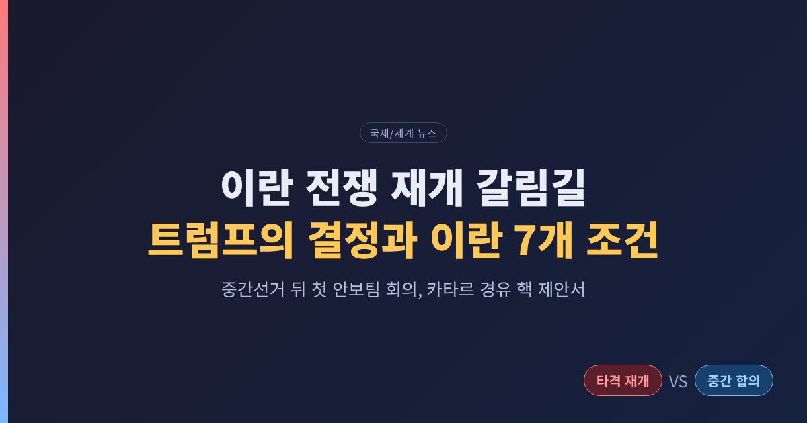
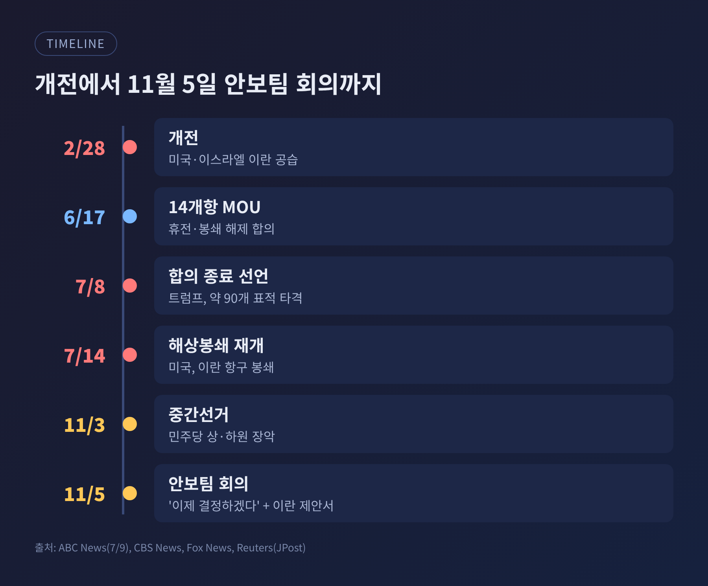
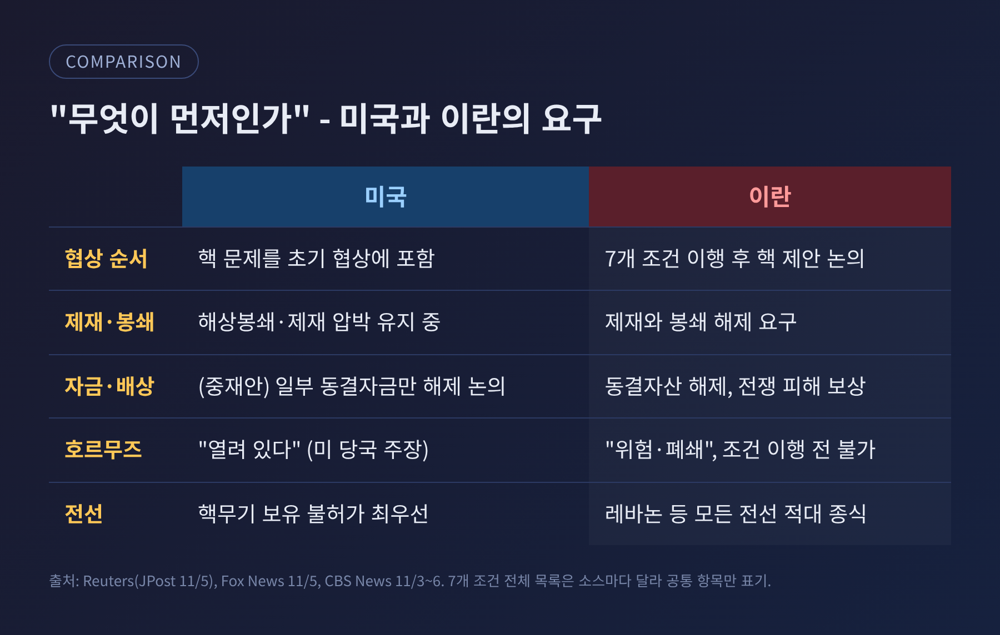
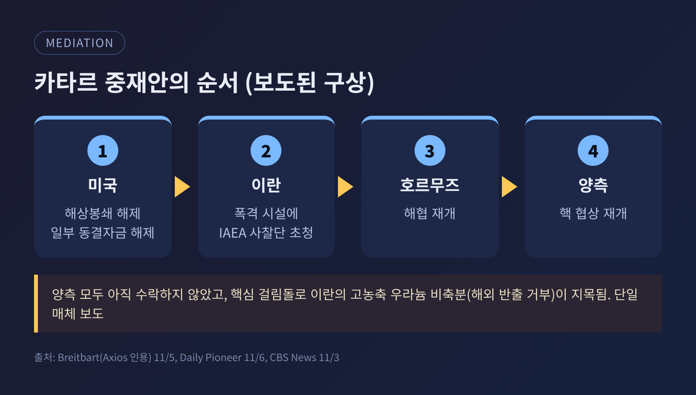
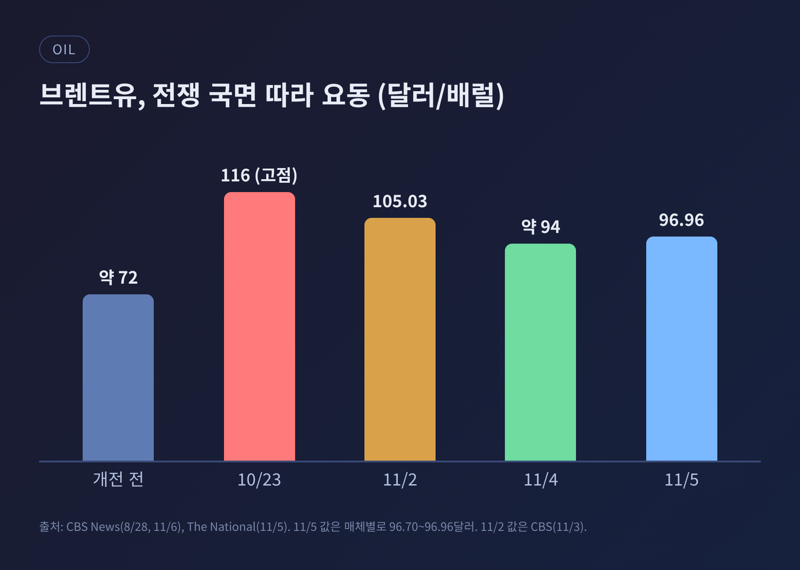
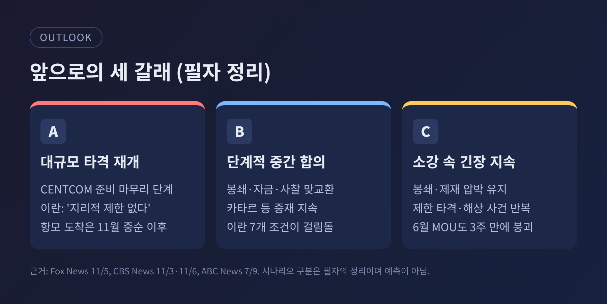

이번 글에서는 미국-이란 전쟁이 재개될지, 합의로 갈지를 가르는 지금의 쟁점을 정리해 보겠습니다. 11월 5일 트럼프 대통령은 국가안보팀 회의 뒤 "이제 결정을 내리겠다"고 밝혔고, 같은 날 이란은 카타르를 통해 핵 관련 제안서를 보냈습니다. 양쪽 모두 문을 완전히 닫지는 않았지만, 서로가 요구하는 순서가 정반대라는 점이 핵심입니다.
전쟁은 2월 28일 미국과 이스라엘의 이란 공습으로 시작되어 약 8개월째 이어지고 있습니다. 이번 주 흐름은 닷새 안에 압축됩니다.
11월 1일, 트럼프 대통령은 전쟁을 "어떤 식으로든" 곧 끝내겠다고 말했습니다. 남은 표적으로는 의심 지하 핵시설인 '피크액스 마운틴'을 언급했습니다. 이란은 이곳의 핵 활동을 부인합니다. 같은 날 Axios는 네타냐후 이스라엘 총리가 중간선거 직후 즉각 공습을 촉구하고 있다고 보도했습니다. 다만 이 보도는 익명 취재원 두 명에 기댄 것이며, 트럼프 대통령은 협상을 당분간 지켜보겠다는 입장으로 전해졌습니다.
11월 2일에는 분위기가 엇갈렸습니다. 트럼프 대통령은 합의가 "가능하다"고 했고, 밴스 부통령은 "일부 진전"이 있다고 말했습니다. 브렌트유는 약 7% 떨어져 배럴당 105.03달러가 되었습니다. 그러나 같은 날 미군은 이란 케슘섬에 '방어적' 제한 타격을 가했습니다. 미국 당국은 이란 혁명수비대(IRGC)가 미군 항공기를 사격했다고 설명했습니다.
11월 3일 중간선거에서 민주당이 상·하원을 모두 차지했습니다. 이틀 뒤인 5일, 트럼프 대통령은 선거 이후 처음으로 이란 문제를 다루는 안보팀 회의를 열었습니다. 중부사령부(CENTCOM)는 대규모 작전 준비를 마무리하고 있지만 새 지시는 받지 못한 상태라고 Fox News는 전했습니다.

선거 결과가 이 전쟁의 정치적 비용을 숫자로 드러냈기 때문입니다. ABC 뉴스 유권자 조사에서 하원 유권자의 34%가 이란전을 투표에 "결정적"이었다고 답했습니다. 생활비(49%)와 정부 부패(55%)보다는 낮지만, 전쟁이 표심에 적지 않게 작용했음을 보여 줍니다.
더 눈에 띄는 것은 여권 내부의 균열입니다. 밴스 부통령은 11월 4일 "우리가 진 이유는 전쟁이다"라고 공개적으로 적었습니다. 이스라엘과의 관계를 바꿔야 한다는 주장도 덧붙였습니다. 밴스 부통령이 개전 전부터 전쟁에 반대했다는 점은 여러 매체가 보도해 왔습니다. 트럼프 대통령은 이 평가가 "대체로 사실"이라고 인정하면서도, 같은 결정을 "다시 해도 그렇게 할 것"이라고 답했습니다. 휘발유값 상승이 영향을 줬다는 점은 받아들이되, 전쟁의 정당성은 접지 않은 셈입니다.
의회의 압박도 예고되어 있습니다. 슈머 상원 민주당 대표는 "이 전쟁은 끝나야 한다"며 예산 통제권을 언급했습니다. 다만 새 의회는 2027년 1월에야 출범합니다. 그 전까지는 대통령의 재량이 상대적으로 넓다는 뜻이기도 합니다. 알자지라는 지금까지 미국이 쓴 전비를 약 470억 달러로 추산했는데, 이 수치는 해당 매체의 단일 인용입니다.
이란의 입장은 분명합니다. 로자이 최고국가안보회의 서기는 로이터 보도에서 "우리의 7개 조건이 이행되지 않는 한 호르무즈 해협을 열지도, 협상을 하지도 않겠다"고 말했습니다. 소스마다 7개 항목의 나열이 조금씩 다르지만, 공통으로 확인되는 것은 네 가지입니다. 제재와 미국의 해상봉쇄 해제, 동결자산 해제, 전쟁 피해 보상, 레바논 등 모든 전선에서의 적대 종식입니다. 7개 조건의 전체 목록은 이번 조사에서 확인하지 못했습니다.
미국의 입장은 순서가 다릅니다. 워싱턴은 핵 문제가 초기 협상에 포함되어야 한다고 말합니다. 트럼프 대통령은 이란 제안서를 봤느냐는 질문에 "그들은 우리 승인 없이는 아무것도 하지 못한다. 핵무기는 갖지 못할 것"이라고 답했습니다. 앞서 11월 3일 로자이 서기는 미국의 대응이 "설득력 없다"고 평가했습니다.
정리하면 이렇습니다. 이란은 '조건 이행이 먼저, 핵 논의는 그다음'이라고 말합니다. 미국은 '핵을 포함한 협상이 먼저'라고 말합니다.

그 사이를 메우려는 것이 카타르 중재안입니다. Axios를 인용한 보도에 따르면 구상은 이렇습니다. 미국이 해상봉쇄를 풀고 일부 동결자금을 풀어 줍니다. 이란은 폭격받은 시설에 IAEA 사찰단을 초청합니다. 이어 호르무즈 해협이 재개되고 핵 협상도 다시 열립니다. 인도 매체 데일리 파이오니어도 같은 골자를 전했습니다. 양쪽 모두 아직 수락하지 않았습니다.
가장 큰 걸림돌은 이란의 고농축 우라늄 비축분으로 지목됩니다. 이란은 이를 해외로 내보내는 데 반대하는 것으로 알려졌습니다. 비축량 자체는 이번 조사에서 확인된 수치가 없습니다. 이 걸림돌 역시 한 매체가 Axios를 인용한 내용이라 단정하기는 이릅니다.
카타르 측은 "중간 합의"를 목표로 한다고 밝혔고, 파키스탄과 사우디도 간접 협상에 관여하고 있습니다. 아라그치 이란 외무장관은 11월 5일 UAE, 카타르, 사우디, 튀르키예, 파키스탄 외무장관과 각각 통화했습니다. 이란은 7일이던 이행 기간을 2일로 줄이자고 제안했다고도 전해집니다.

이 전쟁의 파장은 해협을 통해 가장 직접적으로 퍼집니다. 호르무즈는 세계 석유 소비의 약 5분의 1이 지나는 길목입니다. 영국 해상무역기구(UKMTO)는 10월 한 달 상선 공격이 30건을 넘어 개전 이후 최다였다고 집계했습니다. 2월 28일 이후 누적은 145건입니다.
이란은 조율하지 않은 선박에는 해협이 "위험하고 폐쇄되었다"고 선언했습니다. 반면 미국 당국과 CENTCOM은 남쪽 항로가 안전하고 열려 있다고 말합니다. 같은 해협을 두고 양측 설명이 정면으로 다릅니다. 11월 6일에도 이란 혁명수비대는 유조선 2척이 기뢰에 맞았다고 주장했지만, 해상 당국의 확인은 아직 없습니다.
유가는 이 불확실성을 그대로 반영합니다. 개전 전 약 72달러였던 브렌트유는 10월 23일 116달러까지 올랐습니다. 11월 4일에는 약 94달러로 9월 이후 처음 100달러 아래로 내려왔고, 5일에는 96~97달러선으로 다시 올랐습니다. 후티 반군의 사우디 공격과 이란 해군의 기뢰 피격 주장이 겹쳤기 때문입니다. 삭소은행의 올레 한센은 평화 합의가 없는 한 시장이 이진(二進) 지정학 리스크에 노출되어 있다고 평가했습니다. UBS의 폴 도노반은 전쟁이 끝나면 유가의 적정 수준이 80~85달러로 내려갈 수 있다고 봅니다.

현재 확인된 사실로 그릴 수 있는 길은 크게 셋입니다. 아래는 사실 자체가 아니라 필자의 정리입니다.
첫째, 대규모 타격 재개입니다. 중부사령부의 준비가 마무리 단계이고, Fox는 관리 발언을 인용해 11월 9일 신월(달빛이 거의 없는 시기)이 작전에 유리하다고 전했습니다. 이 부분은 단일 소스입니다. 다만 항모 시어도어 루스벨트 전단은 중동 도착이 11월 중순 이후로 예상됩니다. 이란은 전투가 재개되면 "지리적 제한이 없을 것"이라고 경고했습니다.
둘째, 중간 합의입니다. 카타르 중재안처럼 봉쇄·자금·사찰을 단계적으로 맞바꾸는 방식입니다. 선거 패배가 완화와 중재의 여지를 열었다는 분석이 현지 매체에서 나옵니다. 하지만 이란이 핵 논의의 전제로 7개 조건을 거는 한 접점은 좁습니다.
셋째, 지금의 소강입니다. 봉쇄와 제재 압박은 이어지고, 제한적 타격과 해상 사건이 반복되는 상태입니다. 6월 17일 14개항 양해각서가 약 3주 만에 무너졌던 경험을 떠올리면, 이 상태도 안정적이라고 보기는 어렵습니다. 당시 합의는 호르무즈 통행을 "60일간 요금 없이"로 정해 해석 차이를 남겼고, 7월 8일 트럼프 대통령이 합의 "종료"를 선언했습니다.
변수는 하나 더 있습니다. 이스라엘입니다. 네타냐후 총리는 즉각 공습을 촉구하는 쪽으로 보도되었고, 트럼프 대통령은 대이스라엘 군사원조 연 약 40억 달러를 2026년 말까지 끝내겠다고 말했습니다. 두 사안의 관계는 확인되지 않았으며, 이스라엘 총선 교착 국면과도 겹쳐 있습니다.

여기서부터는 사실이 아니라 필자의 해석입니다. 이번 조사에서 한국 선박의 호르무즈 통항이나 원유 도입 물량 같은 직접 자료는 확인하지 못했습니다.
한국은 원유 대부분을 해외에서 들여오는 경제입니다. 그래서 호르무즈 해협의 불안은 유가와 해상 운임, 환율을 거쳐 물가로 이어지기 쉽습니다. 한국은행의 통화정책 판단이 물가 경로에 민감한 시기라는 점을 고려하면, 재개냐 합의냐에 따라 유가가 한 번 더 크게 움직일 수 있다는 점은 주시할 만합니다. 한편 미국 정치가 '전쟁 피로'로 기울면 동맹국에 대한 분담 요구나 통상 압박이 달라질 수 있다는 가능성도 열어 둘 필요가 있습니다.
정리하면 이렇습니다. 지금의 이란 정국은 '재개냐, 합의냐'보다 '무엇을 먼저 하느냐'의 싸움입니다.
"봉쇄 해제가 먼저인가, 핵 논의가 먼저인가." 이 한 줄이 앞으로 며칠의 흐름을 가를 것입니다.
결정은 곧 나오겠지만, 어느 쪽으로 기울든 해협의 선박과 기름값을 지켜보는 일은 계속될 것입니다.
참고 출처: CBS News, Fox News, Reuters(Jerusalem Post 전재), Al Jazeera, ABC News, The Times of Israel, The National, Axios 인용 보도(Breitbart·Iran International·Daily Pioneer 경유). 모든 보도 날짜는 2026년 11월 1~6일입니다.